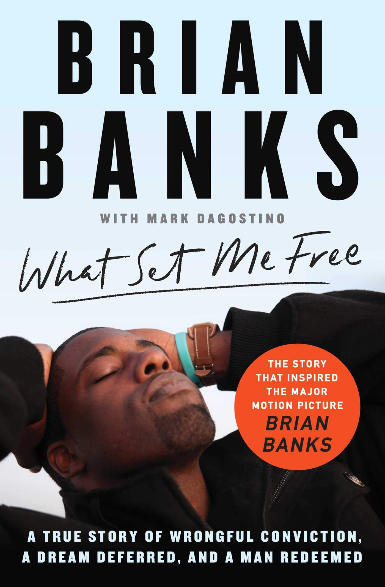

The inspirational true story of Brian Banks, an All-American high school football star committed to USC who finds his life upended when he is wrongly convicted of a crime he didn’t commit. Despite lack of evidence, Banks is railroaded through a broken justice system and sentenced to a decade of prison and probation. Years later, with the support of Justin Brooks and the California Innocence Project, Banks fights to reclaim his life and fulfill his dreams of playing in the NFL.